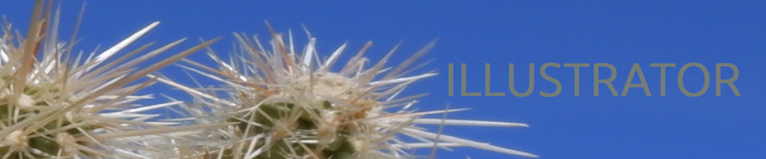

MONET OGANESIAN

 The bird I created is from my textile bird painting. My favorite perk of llustration is that you can adjust the size of your image and it does not distort its quality. Yet, illustration is challenging for me and here are a few reasons why
The bird I created is from my textile bird painting. My favorite perk of llustration is that you can adjust the size of your image and it does not distort its quality. Yet, illustration is challenging for me and here are a few reasons why
- Not use to drawing with paths and anchors.
- I cannot control the weight of the paintbrush as oppose to holding a physical one.
- I am not sure yet how I feel about image tracing.
- I still have alot to learn, so
- Maybe I will think otherwise
- during my time at CCSF.
Home|
Photoshop |
Illustrator |
Animation |
InDesign |